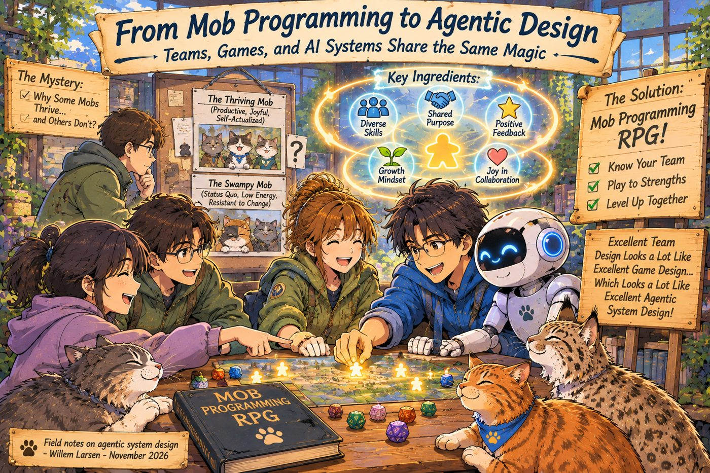

From Mob Programming to Agentic Design
November 2, 2026

When I designed the Mob Programming RPG in...2017? Ish?...at Hunter Industries, I had no idea that I was essentially creating an agentic AI system design manual.
For a period of months, I took it upon myself to do what I called "anthropology" to solve a mystery.
At Hunter, some mobs were alive, productive, joyful, skilled.
Other mobs were...swampy. Status quo-y. Kind of listless. Low energy. Resistant to improvement. Not what you would call, 'self-actualized'.
I couldn't understand this. I got curious.
I had heard that the original mob that proved the practice, the original mob that inspired the company to invest in mob programming and to create an actual software development department, separate from its IT department, to enact the practice, the original mob that inspired this was like a wonder team of software development. They had saved the company a million dollars in their early stages like it was no sweat, paying for the entire team's salary.
So who were they, what was their magic sauce? I knew a couple of the names, but I didn't know the whole team, and I didn't know what made each of them amazing contributors.
Out of this anthropology, and this identification of these 5 members, and their personalities and skills and mindset, I designed the Mob Programming RPG. This was an antidote for any mobs/ensembles that felt like they weren't feeling the magic.
As it happens, excellent team process design looks a lot like excellent game design.
As it further happens, excellent game design looks a lot like excellent agentic system design.
Enjoy!
https://github.com/willemlarsen/mobprogrammingrpg
Field notes from my work at ClickChain AI, first posted on LinkedIn. I write the notes by hand; the images are made with AI.